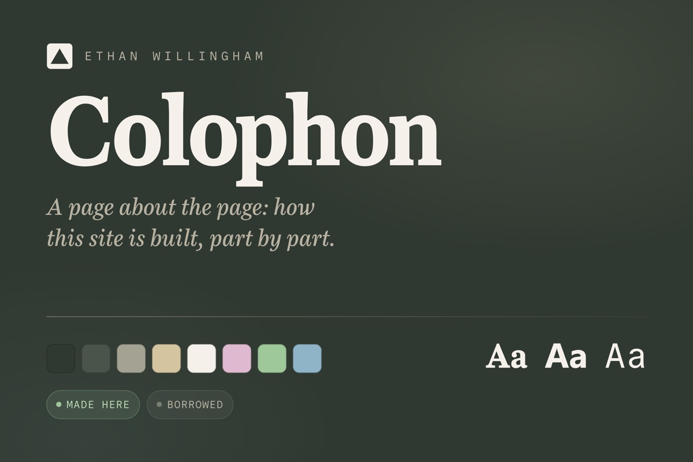

-

Colophon
a page about the page: every color, font, and component this site is built from, laid out in the open and labeled by who made it, made here, or borrowed.
-

Every Push and Every Token
every change i've made to this site, one dot each, and the tokens behind it. i don't write the code anymore; i tell an ai what i want and push every change to production.